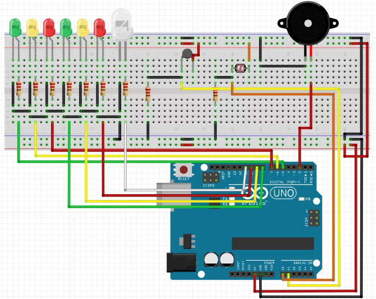
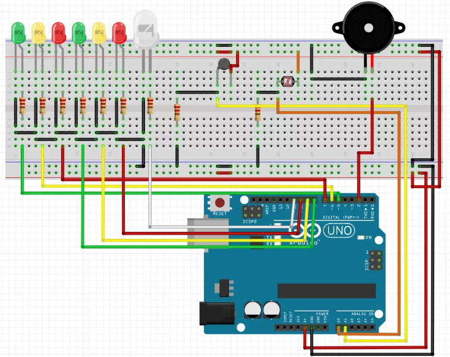

Pedro e Benicio se uniram para desenvolver um Termômetro de Luminosidade utilizando o Arduino. Neste projeto, a ênfase recai na criação de um dispositivo que mede a luminosidade do ambiente, proporcionando uma solução prática e interessante para acompanhar as variações de luz. A colaboração entre a dupla resultou em um dispositivo funcional que destaca não apenas as habilidades técnicas individuais, mas também a eficácia da equipe como um todo. A união de esforços na programação e na montagem do projeto reflete a dedicação e o talento demonstrado por esses alunos.


 
